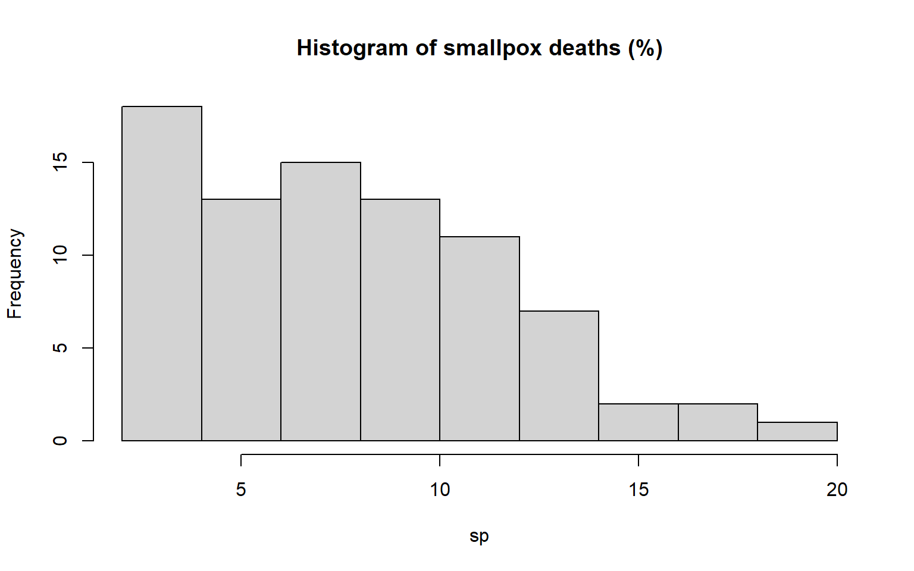

Overview
Welcome to HDAT9700 Interrupted Time Series Analysis!
In this chapter we will focus on interrupted time series analysis, and will involve the application of some of the concepts that we covered in the chapter on Time Series Analysis.
There will be three sections covering the following topics:
- Basics of interrupted time series design
- How to set up your data for interrupted time series analysis
- Segmented regression modelling and ARIMA modelling
Each lecture will be followed by a practical session where you will write your own R code to explore the concepts and methods we discuss.
The prereadings for this chapter are (note the pdfs are also available on OpenLearning):
Bernal JL, Cummins S, Gasparrini A. Interrupted time series regression for the evaluation of public health interventions: a tutorial. Int J Epidemiol 2016;46:348-355. doi: 10.1093/ije/dyw098
Schaffer et al. Interrupted time series analysis using autoregressive integrated moving average (ARIMA) models: a guide for evaluating large-scale health interventions. BMC Medical Research Methodology 2021;21(58). doi: 10.1186/s12874-021-01235-8
The reference text is Shadish WR, Cook TD, Campbell DT. Experimental and quasi-experimental designs for generalized causal inference. 2002. Boston: Houghton Mifflin. ISBN: 0395615569. A pdf of the Chapter is available on OpenLearning.
Some other useful references include:
Soumerai et al. How Do You Know Which Health Care Effectiveness Research You Can Trust? A Guide to Study Design for the Perplexed. Prev Chronic Dis 2015;12:150187.doi: 10.5888/pcd12.150187
Jandoc et al. Interrupted time series analysis in drug utilization research is increasing: systematic review and recommendations. J Clin Epidemiol 2015;68(8):950-6. doi: 10.1016/j.jclinepi.2014.12.018 This article has useful guidance for the reporting of interrupted time series analysis methods.
Lopez Bernal et al. The use of controls in interrupted time series studies of public health interventions. Int J Epidemiol 2018;0(0):1-12 doi: 10.1093/ije/dyy135
Let’s get started!
What is interrupted time series analysis
Interrupted time series (ITS) analysis is increasingly being used to study the impact of large scale interventions, such as public health interventions, health policies and regulatory changes.
Health policies and regulations are often implemented by governments with the goal of improving the health of the population. A recent example would be the rescheduling of over-the-counter codeine products to prescription-only medicines in February 2018 to deter its misuse and prevent dependence.
However, these types of interventions are commonly introduced with a limited evidence base to support their rationale and despite the good intentions, many interventions can have unintended consequences. For instance, in 2003 the US Food and Drug Administration (FDA) put out warnings about an increased risk of suicidality in young people using antidepressants. Using interrupted time series analysis, Lu et al found that this led to a reduction in antidepressant use in young people, but also appeared to have led to an increase in suicide attempts (Lu et al).

Figure. Rates of antidepressant use, psychotropic drug poisonings, and completed suicides per quarter before and after the warnings among adolescents (Source: Lu et al. 2014 BMJ)
This is in part because these types of interventions are blunt tools, targeting entire populations rather than those at risk. Thus, it is important to evaluate these interventions to make sure they are targeting the right individuals, resulting in the intended outcomes, and not resulting in unintended, negative outcomes.
What is ITS analysis?
Recall from the last Chapter that a time series is a chronological sequence of measurements equally spaced through time, with one observation for every time point. ITS analysis is a quasi-experimental approach that takes advantage of the natural experiment that occurs when an intervention is implemented, dividing a time series into “pre-intervention” and “post-intervention” periods.
The causal hypothesis is that the time series after the intervention will behave differently than before as a result of the intervention. This is called an interruption in the time series. In ITS designs, the counterfactual is the path that the time series would have followed had the intervention not occurred.
In this video, I introduce interrupted time series analysis and talk about why we need it, and its strengths and weaknesses.
Strengths and limitations of ITS analysis
Strengths
Policies, regulations, and other large scale interventions that target whole populations, such as media events, cannot easily be evaluated with randomised controlled trials (RCTs), the gold standard for assessing causality. However, observational studies are prone to bias, especially if not properly designed.
Some studies that evaluate large scale health interventions rely on a before-and-after design (also called pre-post design), where the outcome is measured at one time point before the intervention, and one time point after. However, this design is subject to significant bias, as it does not control for pre-existing trends. If the desired outcome is higher post-intervention than before, this may simply be the result of a pre-existing trend and would have occurred regardless of the intervention.
Take a look at the four examples in the figure below - the grey line represents the date of the intervention, the circle is the outcome measured before the intervention, and the square is the outcome after the intervention. What do you conclude about the association between the intervention and the outcome?
Figure. Examples of potential before and after scenarios. (Modified from Soumerai et al. 2015. Prev Chronic Dis)
Now look at this figure which includes the full time series of the outcome (not just the two time points before and after). How do your conclusions change?
Figure. Examples of potential before and after scenarios. (Modified from Soumerai et al. 2015. Prev Chronic Dis)
- For outcome y1, the outcome would appear lower after the intervention in a pre-post design. However, this would be the result of a pre-existing downward trend, and not attributable to the intervention.
- For outcome y2, the outcome would appear the same after the intervention in a pre-post design. However, the outcome would be decreasing, whereas before it was increasing, representing a true impact of the intervention.
- For outcome y3, the outcome would appear lower after the intervention in a pre-post design, which would reflect the true effect of the intervention.
- For outcome y4, the outcome would appear lower after the intervention, but a simple pre-post design would not capture the fact that the outcome is now decreasing at a faster rate than before.
As with before-and-after designs, in ITS analysis the “pre-intervention” period acts as a control for the “post-intervention” period. However, in contrast to simple pre-post design, ITS analysis controls for the underlying trend, including both short-term fluctuations and seasonality, and longer-term trends. In addition, ITS designs tend to use data from entire populations, rather than a select cohort. Thus, selection bias and confounding are not common, as population characteristics tend to remain relatively stable over time, or only change very gradually.
In fact, the ITS design is considered one of the strongest study designs for determining causality after RCTs, and is sometimes referred to as quasi-experimental. It is especially strong when combined with a control series, which we will discuss later.
Table. Hierarchy of study designs. (Adapted from Soumerai et al. 2015. Prev Chronic Dis)
| Hierarchy | Design | Description |
|---|---|---|
| Strong designs: often trustworthy effects | Multiple randomised controlled trials | The gold standard of evidence |
| Randomised controlled trials | A strong design, but sometimes not feasible | |
| Interrupted time series with a control series | Baseline trends often allow visible effects and controls for biases | |
| Intermediate designs: sometimes trustworthy effects | Single interrupted time series | Controls for trend but has no comparison group |
| Before and after with comparison group | Comparability of baseline trend often unknown | |
| Weak designs: rarely trustworthy effects | Uncontrolled before and after (pre-post) | Simple observations before and after, no baseline trends |
| Cross-sectional design | Simple correlation, no baseline, no measure of change |
Limitations
One of the criteria for causal inference is that alternative explanations other than the intervention of interest must be ruled out. This is ITS design’s weakest point, as it can be difficult to say with certainty that there were no other events or changes that may have occurred around the same time as the intervention of interest, especially when the observed effects are small. Therefore, it is important to investigate whether there were any co-occurring interventions around the same time as the intervention of interest that could be an alternative explanation for any findings.
ITS analysis also does not easily allow for the investigation of person-level effects, since by its nature time series data are aggregate. One way around this is to construct multiple time series in different subgroups or populations to identify any variability of effects. For instance, in a study of the impact of a television program critical of statins on statin dispensing in Australia, we constructed separate time series for people with different underlying cardiovascular risk, to identify differential effects (Schaffer et al. 2015. MJA).
Interventions that can be evaluated using ITS analysis
ITS analysis is most useful for evaluation of large-scale, population-level interventions - it can be a planned intervention, or an unexpected event. Some examples include:
- Health policies, e.g. the impact of tobacco plain packaging on Quitline calls in Australia (Young et al) ;
- New treatment guidelines, e.g. the effect of a change in the mammography guidelines on screening rate in the US (Jiang et al)
- Safety warnings, e.g. FDA warnings about antidepressants and suicidality in young people and suicidal behaviour (Lu et al);
- Media events, e.g. a television program critical of statins on statin use and discontinuation (Schaffer et al);
- And many others, e.g. the economic recession and suicide/self-harm in Ireland (Corcoran et al).
Ideally, the intervention to be assessed should occur at a well defined point in time (as opposed to a gradual roll-out). If an intervention occurs over a set period in time (e.g. several months), that period can be excluded from the modelling, or modelled separately. However, there should be a clearly defined “before” period and “after” period to make valid causal inference.
In some cases, there may also be an “anticipatory” period. For example, when alprazolam (a benzodiazepine used to treat panic disorder) was rescheduled from a “Prescription-Only” medicine to a “Controlled Drug” on 1 February 2014, the decision was actually announced on 28 June 2013. Therefore, prescribing started to decline prior to the actual intervention date. In this scenario, it may be appropriate to model this “anticipatory” period so that it can be estimated along with the impact of the actual implementation of the intervention.

Figure. Alprazolam prescribing in Australia (Schaffer et al. 2016. JAMA Intern Med)
What time period to use?
It may be tempting to use as many time points as possible. However, there may have been changes that have occurred over the study period that resulted in changes in the time series. This is particularly an issue with administrative data, when there may be changes in how the data are recorded, such as differences in coding or definitions (e.g. ICD-10-AM vs ICD-9-AM). This is why it is important to start by plotting the data to identify any unusual patterns or extreme values, and to be aware of any administrative changes that have occurred over time.
In terms of minimum number of time points, relatively few time points are needed for a simple linear segmented regression. With seasonal data, at a minimum you should have enough time points to establish the seasonal pattern prior to the intervention. While there are many “rules of thumb” out there, generally it should be considered on a case by case basis. Rob Hyndman provides a good discussion of required sample sizes in time series analysis, both linear regression and ARIMA here.
What time unit to use?
Daily, weekly, monthly, yearly? Consider the potential impact of the intervention on your outcome - will it be large or small? short-term or permanent? It doesn’t make sense to use yearly data if you expect the impact to last a few weeks only - however, using smaller time units increases the complexity of the seasonality. On the other hand, with long-term trends yearly data may be sufficient, and avoids any issues related to seasonality, but also decreases the number of time points.
Outlier time points
In some cases, there may be extreme values seemingly unrelated to the intervention. If the cause of these extremes is known (e.g. measurement error), it is best to include an indicator for these time points in the model to account for them. If they are likely caused by random variation, then they should be left as is.
ITS analysis with a control series
One way of strengthening causal inference from ITS analysis is to add a negative control time series. A negative control time series is one where no effect is expected to be observed. Ideally the outcome and population measured in the control series should be as similar as possible to the one in the intervention series, with the exception that it was not targeted by the intervention. In a study of the impact of helmet legislation on cycling-related injuries in multiple Canadian provinces, the control series was made up of provinces that had not implemented the legislation (Dennis et al (2013) BMJ).
A good example is illustrated below. This shows the impact of introducing surveillance of benzodiazepine prescribing in New York, compared with a neighbouring state, New Jersey, with no such policy. In this case we see a large decline in benzodiazepine use in New York, but not New Jersey, despite similar rates before the intervention.

Figure. Example of negative control series. (Soumerai et al. 2015. Prev Chronic Dis)
The table below describes the types of potential control groups in ITS analysis. In some cases, no appropriate controls exists, while other times it may be appropriate to include multiple control series.
Table. Types of control series
| Type of control series | Description |
|---|---|
| Location-based control | Same outcome in similar location that did not receive the intervention |
| Characteristic- or behaviour-based control | Same outcome in group that was not targeted by the intervention |
| Historical cohort control | Same outcome in similar cohort from previous time period |
| Control outcome | Related outcome not targeted by the intervention in the same population |
| Control time period | Same outcome during different time period not targeted by intervention |
(Adapted from Lopez Bernal et al. 2018. Int J Epidemiol)
To make use of a control series, one approach is to model the intervention time series and control series separately and then compare the results. If no change is observed in the control series, this provides evidence that any changes observed in the intervention series were due to the intervention. If a change is observed in the control series, that suggests there is another factor at play. There are other approaches that statistically compare the changes in the intervention and control series (such as the Difference-in-Difference design); however these tend to have strict assumptions and are not covered here.
Defining the impact of intervention
Different interventions can have different impacts on an outcome. For instance, a regulatory change such as rescheduling codeine would be expected to have a sudden, or abrupt, impact on sales. On the other hand, a practice review sent by NPS MedicineWise to doctors about appropriate prescribing of opioids would have a more gradual impact. The shape of the impact is also influenced by the outcome - increasing the cost of cigarettes may have an immediate impact on sales, but a delayed and gradual impact on lung cancer rates. It is useful to specify the expected shape of the impact a priori to conducting your analysis.
Types of impacts
Let’s start by introducing some terminology.
The change point is the date or time period at which the intervention occurred.
A step change (also called a level shift or a level change) is when the entire time series is shifted either up or down by a given value following the intervention. This is observed in the second plot below. This represents an immediate, and permanent change.
A slope change (sometimes called a ramp in the context of ARIMA modelling) is when the observed trend or rate of change increases or decreases following the intervention. This is observed in the third plot below. The direction of the trend can reverse (i.e. go from increasing to decreasing), or it can continue to increase/decrease but at a slower or faster rate than before the intervention. This represents a gradual impact.
A pulse is when the observed outcome increases or decreases immediately after the intervention only, and then returns to the baseline level. It is a “one-off” effect and represents an immediate, but temporary change.
There are many other ways that a change may manifest. There may be both a step change and a slope change, or a step change and a pulse. The effect may be temporary, or waning over time.

Figure. Examples of intervention impacts
Practical 1: Designing an ITS analysis
In this practical session you will think through how to design an interrupted time series analysis.
Benzodiazepines are medicines intended to be used to treat insomnia and anxiety in the short-term only (a couple of weeks), as they lose effectiveness and may result in dependence. Alprazolam is a benzodiazepine that is commonly misused, particularly the higher tablet strengths.
Due to concerns about this misuse, on 1 February 2017 several changes were made to the availability of alprazolam: first, the highest tablet strength (2 mg) of alprazolam was delisted from the PBS; prescriptions could not have any repeats; and pack sizes were restricted to 10 tablets. More information about the intervention is here: https://www.nps.org.au/radar/articles/reduced-pack-sizes-and-delisting-of-2-mg-doses-of-alprazolam-alprax-gen-rx-alprazolam-kalma-for-panic-disorder.
Exercise 1.1 Designing an ITS analysis study
Think about the intervention. Do you think this is an appropriate intervention to evaluate using an ITS design? Why or why not?
What outcome measures would you suggest using? Think about what data are available in Australia and try to come up with multiple potential outcomes.
For each of these outcomes would you expect the impact to be abrupt or gradual? Permanent or temporary?
Is there an appropriate negative control series that you can think of? Think of the pros and cons of different options.
ITS analysis with segmented regression
Segmented regression is the simplest approach to analysing ITS designs. It is most appropriate for series with either linear or otherwise easily modelled trends, limited or no autocorrelation, and simple or no seasonality.
Essentially, a segmented regression is conducted in the same way as a regular linear regression, the exception being that the model will include indicators representing the baseline trend, and changes after the intervention. If you recall from the previous Chapter, the other difference is that time series data have potential autocorrelation and seasonality that will need to be controlled for to get valid inference.
Let’s start with the basic regression equation. First, some notation:
- \(Y_t\) = the outcome variable;
- \(T_I\) = the time of the intervention.
- \(n\) = the length of the series.
The time variable (\(T_t\)) is a sequence from 1 to \(n\). \[T_t= 1,2,3,...n \]
The intervention variable (\(X_t\)) is defined as 0 before the intervention and 1 after:
\[ X_t= \begin{cases} 0, & \text{if} \;t<T_I \\1, & \text{if}\;t \geq T_I \end{cases} \] The time since the intervention (\(R_t\)) is defined as 0 before the intervention and increases by 1 after:
\[ R_t = \begin{cases} 0, & \text{if} \;t<T_I \\1,2,3,...n, & \text{if}\;t \geq T_I \end{cases} \] A pulse is defined as 1 at the time of the intervention, and 0 otherwise:
\[ P_t = \begin{cases} 0, & \text{if} \;t \neq T_I \\1, & \text{if}\;t = T_I \end{cases} \]
A standard segmented regression analysis can be expressed as:
\[Y_t = \beta_0 + \beta_1 \times \text{time since start of study} + \beta_2 \times \text{intervention} + \beta_3 \times\text {time since intervention} + \epsilon_t\]
In this equation,
- \(\beta_0\) is the intercept,
- \(\beta_1\) is the baseline trend (slope),
- \(\beta_2\) is the step change after the intervention, and
- \(\beta_3\) is the change in the trend (slope) after the intervention.
The new slope after the intervention is \(\beta_1 + \beta_3\). Pulses are less common but can also be incorporated if necessary.
If there is a second intervention that you wish to model, this can also be incorporated by including a second intervention indicator, and the change in slope after the second intervention.
Setting up your data
Let’s work through an example.
On January 31, 1983 the UK introduced compulsory wearing of seatbelts for front passengers when driving. This is an example of a legislative intervention. Before getting started, think about how seatbelt legislation would impact on driving deaths. Would it be a gradual impact? sudden impact?
Now load the ts object UKDriverDeaths. It is the number of drivers killed or seriously injured in the UK per month from Jan 1969 to Dec 1984. As with any data, the first step is to explore your time series.
# Load the driver deaths data
data(UKDriverDeaths)
# Plot the data
par(cex.lab = 0.9, cex.axis = 0.9, cex.main = 0.9)
plot(UKDriverDeaths, ylim = c(500, 3000), ylab = "Driver deaths", xlab = "Month",
main = "Figure. Driver deaths in the UK (1969-1984)")
# Get summary statistics
summary(UKDriverDeaths)The first question is whether this series can be modelled using a linear regression. In the plot above, we see that the trend is mostly linear. And while there is seasonality, it appears to be predictable, and likely monthly. Thus, it may be a good option for linear regression.
One thing to note is that there appears to have been a shift around 1974 or so. We don’t know what was happening during this time period - maybe there was a change in how data were recorded, or some other intervention targeted to drivers. Since we aren’t interested in this change, and in the absence of information about the cause, let’s restrict to 1975 onwards, as this will still leave us with sufficient data points. Alternatively, you could include a variable representing this shift or time period in your model.
To restrict our data, let’s use thewindow() function. With the window() function you need to specify either the start date, end date, or both.
# Restrict to January 1975 onward and check that it has worked
UKDD <- window(UKDriverDeaths, start = c(1975, 1))
head(UKDD)ITS variables
Let’s now create the necessary variables to represent the potential changes in the time series after the seatbelt law came into effect. Since we are working with ts objects, it is easiest to create separate vectors. If you prefer, this can also be done with a data frame, or combined into one mts object.
Useful functions that we will use to generate our variables are:
seq(), which creates a numerical sequence;rep(), which replicates a given value a specified number of times;length(), which extracts the length of a ts object;append(), which appends two vectors; andsum(), which counts the number of occurrences of a value.
# Create vector for introduction of seatbelt law
belt <- ifelse(as.yearmon(time(UKDD)) >= "Feb 1983", 1, 0)
# Convert to ts object and view This isn't essential but does help to check
# that you created the variable correctly
belt <- ts(belt, start = c(1975, 1), frequency = 12)
print(belt)
# Create vector for time since start of study
UKDD.time <- seq(1, length(UKDD)) %>%
ts(start = c(1975, 1), frequency = 12)
print(UKDD.time)
# Create vector for time since intervention Zero if before the intervention
# Otherwise equal to time since start of study - date before intervention
belt.after <- append(rep(0, sum(as.yearmon(time(UKDD)) < "Feb 1983")), seq(1, sum(as.yearmon(time(UKDD)) >=
"Feb 1983"))) %>%
ts(start = c(1975, 1), frequency = 12)
print(belt.after)Delayed effects
If you suspect that the impact of the intervention has been delayed, you can deal with this by creating new intervention variables that are shifted by 1, 2, etc. To determine the most appropriate lag, you can create several models with the intervention starting at different lags - the most appropriate model would be the one with the lowest AIC or BIC. Note that it is better to create a new intervention variable, rather than just “lagging” the original one, as the latter will result in the first observation being dropped. Don’t forget to also recreate the “time since intervention” variable to start lagged at one month too!
It is important to only consider lagged or delayed effects when it makes sense from a practical or clinical perspective - given what you know about the intervention and outcome, is it possible that# Create vector for introduction of seatbelt law, lagged by one month
belt.lag <- ifelse(as.yearmon(time(UKDD)) >= "Mar 1983", 1, 0) %>%
ts(start = c(1975, 1), frequency = 12)
print(belt.lag)
# Create vector for time since intervention
belt.after.lag <- append(rep(0, sum(as.yearmon(time(UKDD)) < "Mar 1983")), seq(1,
sum(as.yearmon(time(UKDD)) >= "Mar 1983"))) %>%
ts(start = c(1975, 1), frequency = 12)
print(belt.after.lag)Seasonal dummy variables
If the time series is seasonal, we will need to create dummy variables representing the seasonal component. This is so we can adjust for seasonality (i.e. seasonal autocorrelation) within our segmented regression model.
To do so, we can useseasonaldummy() in the forecast() package. For monthly data, this creates a matrix with a dummy variable for each month (0/1), with December as the reference. If our data were quarterly, it would create a dummy variable for each quarter.
# Create vector with month dummy variables
UKDD.mon <- seasonaldummy(UKDD)
head(UKDD.mon, n = 12)If the seasonality occurs in an oscillating patterns (as with hospital admissions for influenza), this can be controlled for using harmonic terms, e.g. a combination of sine and cosine terms.
Autocorrelation
Recall that one of the key assumptions of a linear regression is that the residuals are independent and not correlated. Sometimes, adjusting for trend and seasonality will be enough to eliminate autocorrelation.
After fitting your segmented regression model, you need to check for autocorrelation of the residuals. The best way to do this is using the Ljung-Box test, which we will cover later. If there is remaining autocorrelation after adjusting for trend and seasonality, you may have to incorporate autoregressive terms. Recall that in an autoregressive model, the outcome is predicted using past values of the outcome itself. We will discuss how to do this in Lecture 3.
Visualising interventions
When performing an ITS analysis, when you plot the raw data you should indicate the date of the intervention. We’ll do it below using abline().
Note that as.yearmon() doesn’t work with abline() - so instead we’ll use the numeric version of the date. If you aren’t sure what that is, you can check using time().
# Check how ts objects store information about time
time(UKDD)Here we see that February 1983 is represented by 1983.083. So we’ll use that:
# Plot raw data
par(cex.lab=.9,cex.axis=.9,cex.main=.9)
plot(UKDD, ylim=c(500,3000), col="blue", ylab="Driver deaths", xlab="Month", main="Figure. Driver deaths in Great Britain (1975 to 1984)")
# Add a vertical line - "col" is colour, "lty" is line type, "lwd" is line width
abline(v=1983.083, col="red", lty="dashed", lwd=2)Like we saw in the last chapter, we can also plot the seasonally adjusted series along with the raw data. This can help visualise the impact of the intervention.
# Extract trend information from time series and seasonally adjust
deseason <- UKDD-decompose(UKDD)$season
# Plot deseasoned data and raw data together
par(cex.lab=.9,cex.axis=.9,cex.main=.9)
plot(cbind(UKDD, deseason), plot.type="s", ylim=c(500,3000), col=c("dodgerblue","dodgerblue4"), ylab="Driver deaths", xlab="Month", main="Figure. Driver deaths in Great Britain (1975 to 1984)",lty=c("dashed","solid"))
abline(v=1983.083, col="red", lty="dashed", lwd=2)
legend("topright", legend=c("Observed","Seasonally adjusted"), col=c("dodgerblue","dodgerblue4"), lty=c("dashed","solid"), cex=.8)Practical 2: Setting up your data for ITS analysis
In this practical session you will practice setting up your data for an interrupted time series analysis.
For these exercises you will use data on monthly dispensings of alprazolam in Australia. As mentioned in Practical 1, on 1 February 2017 the high strength tablet strength (2 mg) was delisted from the PBS and there was a limit on pack size and repeats. The data were extracted from here: https://www.pbs.gov.au/info/statistics/dos-and-dop/dos-and-dop.
The dataset alprazolam is already loaded as a vector. The series is monthly and starts in July 2014 and ends in January 2018.
You will learn the following functions:
- seq()
- abline()
- as.yearmon()/time()
- length()
- rep()
Exercise 2.1 Creating interrupted time series variables
# First convert the vector "alprazolam" to a time series object called alp
alp <- ts(alprazolam, start=c(2014,7), end=c(2018,1), frequency=12)
head(alp)
# Create a vector representing a step change (before/after the intervention) called "step"
# Create a sequence vector representing time since start of study called "time"
# Create a sequence vector representing time since intervention called "after"
# Print your new vectors to check
# Note it is easier to check if they are correct by converting them to ts objects# To create intervention variable use:
step <- ifelse(as.yearmon(time(alp))>='Feb 2017',1,0) %>% ts(start=c(2014,07), frequency=12)
step # To create sequence variables use:
time <- seq(1, length(alp)) %>% ts(start=c(2014,07), frequency=12)
time# To create sequence variable for time since intervention use:
after <- append(rep(0,sum(as.yearmon(time(alp))<'Feb 2017')),seq(1,sum(as.yearmon(time(alp))>='Feb 2017'))) %>% ts(start=c(2014,07),frequency=12)
afterExercise 2.2 Creating seasonal dummy variables
# Plot the decomposed series
# Create a matrix of seasonal dummy variables called "month"
# Print to check that they were created correctly# To plot decomposed series use:
plot(decompose(alp))# To create seasonal dummy variables, use:
seasonaldummy(alp)Exercise 2.3 Delayed effects and lagged variables
# Create vectors representing the impact if the effect were delayed by 1 month for the step change (called "step.lag1") and time since intervention (called "after.lag1")
# Print to make sure they were created correctly# To create the new intervention variable, use the same code as for the original but change "Feb 2017" to "Mar 2017"Exercise 2.4 Visualising interrupted time series data
# Plot the time series including a vertical line representing the intervention# To plot a vertical line use "abline(v=2017.083, col= , lty= )"Segmented regression modelling
Let’s continue with the example of the impact of the seatbelt legislation on driver deaths in the UK.
First, let’s check the distribution of our outcome variable using a histogram.
# Check distribution
hist(UKDD)Even though the number of deaths is a count, large counts (i.e. that are not bounded by zero) can be treated as continuous. Thus, we will use a Gaussian (Normal) distribution (rather than Poisson).
The next step is to explore the series in further detail. We’ll also check for autocorrelation, using the Ljung-Box test using Box.test in base R. The null hypothesis is that there is no autocorrelation and the time series is independent. Thus, a p-value<0.05 indicates that there IS autocorrelation.
# Plot the decomposed series, the seasonal plot, and the ACF plot
plot(decompose(UKDD))
ggseasonplot(UKDD, year.labels = TRUE)
acf(UKDD)
# Check for autocorrelation using the Ljung-Box test Since we suspect there is
# monthly seasonality, we will specify lag=12
Box.test(UKDD, type = "Ljung-Box", lag = 12)What do these plots tell you about the time series and the intervention?
- The plot of the decomposed series tells us that the trend in deaths is fairly constant until it drops in 1983 (our hypothesised change point);
- The seasonal plot tells us that driver deaths are most common in December, and that 1983 and 1984 (after the intervention) appear to have the lowest number of deaths;
- The ACF plot confirms that there is significant monthly seasonality, with a large spike at lag 12 (lag 1.0 on the plot) and thus we will need to include seasonal dummy variables in our model.
- The Ljung-Box test p-value is very small, and thus we reject the null hypothesis of no autocorrelation. However, sometimes autocorrelation is simply the result of trend or seasonality, and once we adjust for these autocorrelation will no longer be a problem. Thus, once we fit our regression model we will retest our residuals for the presence of autocorrelation.
Based on this information, we can hypothesise that the impact of this intervention was a step change. However, we will also test for a change in slope.
Let’s model our time series, including as predictors the vectors we created in Lecture 2:
- Baseline trend (UKDD.time);
- Step change (belt);
- Change in trend (belt.after); and
- Seasonal dummy variables (UKDD.mon).
lm() to estimate our model. Afterwards, we will check the fit using the residual plots and test for residual autocorrelation using the Ljung-Box test.
# Estimate model
UKDD.model1 <- lm(UKDD ~ UKDD.time + belt + belt.after + UKDD.mon)
# Check residual plots
plot(UKDD.model1)
# Ljung-Box test for autocorrelation of residuals
Box.test(UKDD.model1$residuals, lag = 12, type = "Ljung-Box")The residual plots look good and there are no clear violations of regression assumptions. We also see that the Ljung-Box test is non-significant (p=0.48), thus the autocorrelation we saw earlier was probably due to either seasonality or trends, that we have now adjusted for. Our model seems okay, so let’s look at the parameter estimates using summary(), use confint() to get the confidence intervals, and AIC() to get the AIC.
# Get parameter estimates and confidence intervals
summary(UKDD.model1)
confint(UKDD.model1)
AIC(UKDD.model1)Here is the summary of our model.
Table. Summary of Model 1
| Parameter | Model 1, Estimate (95% CI) |
|---|---|
| Intercept | 2077 (1995, 2159) |
| Baseline trend | -0.1 (-0.9, 0.7) |
| Level shift | -363 (-469, -257) |
| Change in trend | 5.8 (-1.3, 12.8) |
| AIC | 1485.3 |
Here we see that the baseline trend was essentially zero. Immediately after the seatbelt law came into effect, there was a significant level shift (or step change) reduction in driver deaths that was sustained for the duration of the study period. There was no change in trend. It is always a good idea to go back to your plot, and check that these numbers make sense.
Of course, with any regression we cannot extrapolate our findings beyond the range of our study period. Therefore, we can only say that the law resulted in fewer driver deaths up until the end of 1984.
Now let’s say we suspected that the impact of the intervention was delayed - perhaps it took some time for people to get in the habit of wearing seatbelts. We’ll rerun our model using the variables we created earlier, with the impact of the intervention starting in March 1983.
# Estimate model with impact lagged by 1 month
UKDD.model2 <- lm(UKDD ~ UKDD.time + belt.lag + belt.after.lag + UKDD.mon)
summary(UKDD.model2)
confint(UKDD.model2)
AIC(UKDD.model2)Table. Summary of Models 1 and 2
| Parameter | Model 1, Estimate (95% CI) | Model 2, Estimate (95% CI) |
|---|---|---|
| Intercept | 2077 (1995, 2159) | 2089 (2004, 2175) |
| Baseline trend | -0.1 (-0.9, 0.7) | -0.3 (-1.2, 0.5) |
| Level shift | -363 (-469, -257) | -338 (-451, -224) |
| Change in trend | 5.8 (-1.3, 12.8) | 5.6 (-2.3, 13.5) |
| AIC | 1485.3 | 1496.9 |
Model 2, which includes the lagged intervention has a higher AIC than Model 1. The estimates for the step change in both models have very small p-values and so does not help distinguish between models. So, Model 1 is preferred over Model 2.
We can conclude that the seatbelt law appears to have resulted in fewer driver deaths. Although with observational studies we can never say with 100% certainty the relationship is causal, the magnitude of the effect, and the strength of the association provide strong evidence for a causal relationship.
Plotting the counterfactual
Now let’s plot the counterfactual - that is, the number of deaths we would have expected to see in the absence of the law. To do so, we will use the function predict().
To do this, you will have to create a data frame with the “new” seatbelt variables - that is, a variable representing “no seatbelt law”, that is just 0 for both the step change and change in slope. Ensure that the column within the data frame has the same name as the original vector (belt and belt.after) so that the predict() function recognises it.
# Create variables representing the step change and slope change had the law NOT been implemented
# Note that it must be a data frame, and have the same name as the vector used in the modelling
nobelt <- data.frame(belt=rep(0, length(belt)), belt.after=rep(0, length(belt.after)))
# Create the predicted time series in the absence of the intervention (i.e. the counterfactual)
UKDD.cf <- predict(UKDD.model1, newdata=nobelt)
# Merge with the original data
UKDD.cf <- ts.union(UKDD, UKDD.cf)
# Plot
par(cex.lab=.9,cex.axis=.9,cex.main=.9)
plot(UKDD.cf, plot.type="s", ylim=c(500,3000), col=c("blue","red","gray40","gray40"), lty=c("solid","solid","dashed","dashed"), ylab="Driver deaths", xlab="Month", main="Figure. Driver deaths in Great Britain (1975 to 1984)")
abline(v=1983.083, col="gray", lwd=2, lty="dashed")
legend ("topright", legend=c("Observed","Predicted"), col=c("blue","red"), lty=c("solid","solid"))The red line in this figure represents the number of deaths we would have expected to see if the seatbelt law had not been implemented.
Conclusion
One of the most important parts of an analysis is interpretation of your estimates and your conclusion. A good conclusion should not just state what was found, but also include all parameter estimates and their 95% confidence intervals. An important tip: don’t focus on statistical significance or p-values as they are highly influenced by the sample size, and don’t tell you whether your results are clinically or practically meaningful. Especially when working with “big data” it is common that everything (even tiny differences) are significant; effect estimates and confidence intervals provide much more meaningful information.
Here is what we can conclude for the analysis of the introduction of the seatbelt law:
Prior to introduction of the seatbelt law, the monthly number of driver deaths in the UK was constant (baseline slope: -0.1, 95%CI -0.9 to 0.7), with a median of 1550 deaths per month. Immediately after the seatbelt law came into effect, there was a level shift of 363 fewer driver deaths per month (95% CI -469 to -257) that was sustained for the duration of the study period. There was no change in the slope post-intervention (5.8, 95%CI -1.3 to 12.8). Thus, we can say that introduction of the seatbelt law was associated with fewer driver deaths in the UK. However, we cannot rule out that other interventions introduced at the same time as the seatbelt law may have also had an impact.
In this video, I provide an overview of segmented regression, including how to interpret residual plots and determine if your model has a good fit.
Autoregressive models
Sometimes, segmented regression is not sufficient or appropriate. For instance, your time series may have cyclic trends, or complex seasonality (e.g. daily or weekly) that are difficult to capture with dummy variables.
We will start with the simplest example, an autoregressive (AR) model. If your model has residual autocorrelation even after controlling for trend and seasonality, you may require an AR model.
Let’s use data on the percentage of deaths in London due to smallpox (smallpox). These are yearly data from 1750 to 1831 from Our World in Data (https://ourworldindata.org/smallpox). The vaccine was invented in 1796. We are testing the hypothesis that the smallpox vaccine led to a reduction in smallpox deaths.
First, visualise the data. Since these are yearly data, there is no seasonality.
Hmm, the variance seems greater at the beginning than later in the season. If we look at the histogram, we can also see that the distribution is skewed.

Let’s stabilise the variance by log transforming our series.
That looks better.
Now, let’s create a vector representing the time since the start of the study to estimate the baseline slope, a step change, and a change in slope.# Time since the start of the study
sp.time <- seq(1, length(sp))
sp.time
# Step change
sp.vax <- ifelse(time(sp)<'1796',0,1)
sp.vax
# Change in slope
sp.after <- append(rep(0,sum(time(sp)<'1796')), seq(1,sum(time(sp)>='1796')))
sp.afterFirst, let’s try a linear regression, and make sure to check the residuals for the presence of autocorrelation. We’ve already seen the Ljung-Box test.
We will use the log transformed outcome variable.# Segmented linear regression model
sp.model1 <- lm(log(sp) ~ sp.time + sp.vax + sp.after)
# Check for residual autocorrelation, using either the Ljung-Box test or Durbin Watson test
Box.test(sp.model1$residuals, type="Ljung-Box", lag=1)Hmm, the p-value for the Ljung-Box test is very small, indicating significant residual first-order autocorrelation in the model. Given that there is no trend prior to the intervention, and that there is no seasonality, we’ll try an AR() model (instead of a full ARIMA model).
To do so, we will use auto.arima(), but specify the order of differencing (d) and the MA order (q) to both be zero since we want an AR model. (Recall from last chapter that p is the AR order of the model, d is the order of differencing, and q is the MA order).
We also include the regression variables using xreg=.
# Apply AR(1) model to data
auto.arima(log(sp), d=0, max.q=0, xreg=cbind(sp.time, sp.vax, sp.after))sarima() in the astsa package.
# Apply AR(1) model to data
sp.model2 <- sarima(log(sp), p=1, d=0, q=0, xreg=cbind(sp.time, sp.vax, sp.after))sarima() automatically produces the residuals plots, with the Ljung-Box test at the bottom. As the dots are all above the blue line for the Ljung-Box statistic, this indicates no more autocorrelation. Our final model is an AR(1) model - that is, an autoregressive model with 1 order of autocorrelation. Let’s get our final estimates:
sp.model2$fit
confint(sp.model2$fit)Given that our outcome was log transformed, we will need to back transform the estimates using the \((e^{estimate}-1)*100\), and the resulting estimates can be interpreted as a percentage change. Here are our estimates:
- Baseline slope: -0.1% (95%CI -0.6% to 0.3%)
- Step change: 2.6% (95%CI -15.1% to 24.1%)
- Change in slope: -3.3% (95%CI -4.1% to -2.5%)
This means that prior to the vaccine, the proportion of deaths due to smallpox was stable (-0.1%, 95%CI -0.6% to 0.3%). After the vaccine was invented, there was no evidence of a step change in the number of deaths (2.6%, 95%CI -15.1% to 24.1%); however, the percentage of deaths due to smallpox decreased by 3.3% per year (95% CI -4.1% to -2.5%).
Now while the vaccine was discovered in 1796, it may have taken some time to have widespread usage. Therefore, we would also test for a delayed impact (e.g. with the change starting in 1797 or 1798), which can be done following the approach described above.
Full ARIMA model
The autoregressive model described above is a specific type of ARIMA model. Now we will discuss full ARIMA models, where the trend is eliminated via differencing, rather than including time as a covariate in the model, which is only appropriate with linear trends.
Essentially what ARIMA does is forecasts \(Y_t\) in the absence of the intervention, and determines how the observed diverges from that forecast. We will use what we learned in the previous chapter to fit an ARIMA model to an ITS analysis.
Let’s use the time series quet. It includes the monthly dispensings for the antipsychotic quetiapine in Australia from January 2011 to December 2014 (48 time points). Quetiapine is subsidised by the PBS for treatment of schizophrenia and bipolar I disorder. The lowest strength tablet is meant to be used for dose titration, but is commonly prescribed off-label for conditions such as insomnia. Note that “off-label” means prescribed for an indication other than the one for which it is registered or approved.
In January 2014, the PBS decided to eliminate repeat prescriptions for the lowest tablet strength (Brett et al.).
The hypothesis we will test is that the change to subsidy of quetiapine was associated with a decline in its dispensing.
Let’s start by exploring the data.
Step 1. Stationarity and seasonality
Check for trends, non-constant variance, and seasonal effects, visually and/or using formal tests. Determine the necessary order of first differencing (d) and seasonal differencing (D).
# Plot data
par(cex.lab=.9,cex.axis=.9,cex.main=.9)
plot(quet, ylab="No. dispensings", xlab="Month", ylim=c(0,40000),col="blue",main="Figure. Quetiapine dispensing in Australia (2011-2014)")
abline(v=2014.00, col="gray", lwd=2, lty="dashed")# Plot decomposed data
plot(decompose(quet))
# Plot seasonal data
ggseasonplot(quet, color=rainbow(12))
# Plot ACF plot
acf(quet, lag=24)What do these plots tell us?
- The plot of the raw data suggests that the variance is fairly constant over time so no log transformation is needed;
- The plot of the decomposed series tells us that prior to the intervention there is an increasing trend in the number of dispensings, and we should include a first difference (d);
- The seasonal plot tells us that the number of dispensings is greatest in December and lowest in January - we also know from experience that PBS dispensing data are seasonal;
- The seasonal plot also tell us that the number of dispensings is lower in 2014 (after the intervention) than in other years (as we predicted);
- The ACF plot shows that there autocorrelation, however the seasonality is not evident here. However, given that we know PBS data are typically seasonal, and we should include a seasonal difference (D).
Step 2. Set up data
Setting up your data for an ARIMA model is very similar to a segmented regression. However, the “time since start of study” variable and seasonal dummy variables are not needed, as ARIMA deals with trends and seasonality by differencing.
Now, let’s create two vectors representing the intervention effects. Based on our visualisation, we hypothesise that the intervention results in a level shift (step change) and a change in slope (ramp).# Create vector for step change after change in subsidy
quet.step <- ts(append(rep(0, 36), rep(1, 12)), start = c(2011, 1), frequency = 12)
print(quet.step)
# Create vector for change in slope (ramp) Note that we have 36 months prior to
# the intervention, and 12 months post-intervention
quet.ramp <- ts(append(rep(0, 36), seq(1, 12)), start = c(2011, 1), frequency = 12)
print(quet.ramp)Step 3. Identify AR and MA orders
Using the ACF and PACF plot, identify the potential AR (p) and MA (q) orders, and the seasonal AR (P) and MA (Q) orders. Make sure to do this on the differenced series.
# Plot the ACF/PACF plots - remember to use the differenced series
acf2(diff(diff(quet), lag=12))Hmm, the ACF and PACF aren’t particularly useful in this case. Let’s check with auto.arima() - make sure to prespecify d and D based on what we found above.
Here we also specify our external variables to include in our ARIMA model (step, ramp), using the argument xreg=. Note that you do not have to include the “time since start of study” variable, or the seasonal dummies, in an ARIMA model, as the differencing eliminates the trend. We will also specify stepwise=FALSE so that auto.arima searches all possible models (note: it may take a minute or two to run!).
# Check for most appropriate AR/MA orders
auto.arima(quet, d=1, D=1, xreg=cbind(quet.step, quet.ramp), stepwise=FALSE)auto.arima() suggests the best model based on the lowest information criteria (AIC, BIC). It suggests that our model is \((2,1,0)\times(0,1,1)_{12}\).
Step 4. Model Estimation
Next, fit the proposed model and check the model fit usingsarima(). Make sure to include the step and ramp functions when specifying the model - like before, you do this by including the argument xreg=.
# Model estimation
quet.model1 <- sarima(quet, p = 2, d = 1, q = 0, P = 0, D = 1, Q = 1, S = 12, xreg = cbind(quet.step,
quet.ramp))The model fits looks okay, and the Ljung-Box test is nonsignificant at all lags. The QQ-plot is borderline, but the deviation is mostly at the extremes which is to be expected.
Now, let’s get our final estimates:
# Get estimates and confidence intervals
quet.model1$fit
confint(quet.model1$fit)Final model
Our final model is \((2,1,0)\times(0,1,1)_{12}\).
The estimates of effect are:
- The step change variable represents an immediate reduction (step change) in dispensings (-3285, 95% CI -4465 to -2104) that was sustained for the duration of the study period;
- The ramp or slope change variable means that the number of dispensings decreased by 1397 dispensings (95% CI -1606 to -1188) in each month on top of the step change;
- Therefore, in January 2014 there were 4682 fewer dispensing (3285 + 1397) than would have been expected in the absence of the subsidy change. The number of dispensings post-intervention was trending downward by 1397 dispensings per month.
- Note that with an ARIMA model, we cannot estimate the trend or slope pre-intervention.
In this video, I talk about how to choose between segmented regression and ARIMA models.
Plotting the counterfactual in ARIMA
Like with segmented regression, you may want to plot the counterfactual (predicted values in absence of intervention). To do so, you will use the ARIMA model you used to estimate the change to forecast the post-intervention values. To do so, you will use the subset of data prior to the intervention only.
# Model data excluding post-intervention period, using the ARIMA orders
# identified previously. IMPORTANT: you need to use the 'Arima()' function in
# the forecast package (*not* sarima or arima).
quet.model2 <- Arima(window(quet, end = c(2013, 12)), order = c(2, 1, 0), seasonal = list(order = c(0,
1, 1), period = 12))
# Forecast 'h' time units post-intervention
quet.fc <- forecast(quet.model2, h = 12)
# Extract forecasted values and convert to time series object
quet.fc2 <- as.numeric(quet.fc$mean) %>%
ts(start = c(2014, 1), frequency = 12)
# Combine with observed data
quet.cf <- ts.union(quet, quet.fc2)
# Plot
par(cex.lab = 0.9, cex.axis = 0.9, cex.main = 0.9)
plot(quet.cf, plot.type = "s", ylab = "No. dispensings", xlab = "Month", ylim = c(0,
40000), col = c("blue", "maroon"), lty = c("solid", "longdash"), main = "Figure. Quetiapine dispensing in Australia (2011-2014)")
abline(v = 2014, col = "gray", lwd = 2, lty = "dashed")
legend("bottomright", legend = c("Observed", "Predicted"), col = c("blue", "goldenrod"),
lty = c("solid", "longdash"), cex = 0.8)Practical 3: Segmented regression and ARIMA
We will continue to use the alprazolam data for this practical. Now, we will conduct a segmented regression.
You will learn the following functions:
- lm( )
- Box.test( )
- predict.lm( )
The previously created vectors are:
- Time series object - alp
- Baseline trend/slope - time
- Step change - step
- Step change (lagged 1 month) - step.lag1
- Slope change - after
- Slope change (lagged 1 month) - after.lag1
- Month dummy variables - month.
Exercise 3.1 Regression modelling and model fit checking
# Using segmented regression, model your time series "alp" using a combination of a step change and slope change (call it "model1") - include month as a dummy variable
model1 <-
# Model summary (using "summary()")
# Check your model fit by plotting the residuals - what do these plots tell you?# To model your time series:
model1 <- lm(alp ~ time + step + after + month)# To output the model summary use:
summary(model1)# To plot the residual, use:
plot(model1)Exercise 3.2 Testing for residual autocorrelation
# Rerun model1
model1 <-
# Conduct a Ljung-Box test of model residuals for autocorrelation - what do the results tell you?
# Recall that the null hypothesis is that the data are NOT autocorrelated# To test for autocorrelation:
Box.test(model1$residuals, type="Ljung-Box", lag=12)Exercise 3.3 Delayed intervention
# Rerun the model with the intervention variables delayed by 1 month (call it "model2")
model2 <-
# Check the summary statistics and AIC and compare it to the first model. How do the parameter estimates compare? Does this model have a better or worse fit?Exercise 3.4 Plotting the counterfactual
Make sure to use the “best” model (model1 or model2) from above.# Create a data frame representing the intervention had it not occurred (call it "noint")
# Note that it must be a data frame, and have the same name as the vector used in the modelling
# Predict the series had the intervention NOT occurred using "predict()"
# Merge with the original data
# Plot both on the same plot - don't forget the legend and vertical line representing the intervention# Variables if intervention had not occurred:
noint <- data.frame(step=rep(0,length(alp)), after=rep(0,length(alp)))# Predict the series had the intervention not occurred
cf <- predict(model1, newdata=noint)# Merge with original data
alp.cf <- cbind(alp, cf)Exercise 3.5 Final model
# Produce the estimates of your final model, including confidence intervals
# How do you interpret these results? What can you conclude about the intervention?# To get estimates, use:
summary(model1)# To get confidence intervals, use:
confint(model1)
# or to get both summary statistics and 95% CIs together
# use 'tidy' in the 'broom' package
broom::tidy(model1)Exercise 3.6 ARIMA
# Run the same model using "auto.arima()" - remember you don't need the variables representing time or seasonality - and prespecify "d" and "D"
# How do the parameter estimates compare to the segmented linear regression above?# Use:
auto.arima(alp, d=1, D=1, xreg=cbind(step,after))